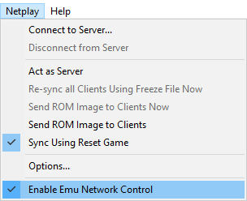

Features
Donkey Kong Country in Archipelago allows players to go through the DK isle with new features and Quality of Life changes that aim to make your journey quite enjoyable! All of the features present are:
- Open world
- Random starting world
- Ability & item shuffle
- A lot of locations, some are very hidden!
- Different logic difficulty levels
- Several unique traps
- EnergyLink and TrapLink support
- Universal tracker support
- ROM-less generation
There are several quality of life changes as well traps to keep players engaged, those are further disclosed on their respective sections.
Quality of Life
There are a few Quality of Life additions for this game. The original game is quite hard, so they're very welcome especially for new users trying out this randomizer!
- Backup DK Barrels: There are items with this name that allows players to summon one DK Barrel at any point with
L or R. If they have the maximum amount of Kongs on screen, an extra hit will be granted which allows players to tank one hit without losing a Kong. A [K] letter will be drawn on the bottom left corner to indicate that an extra hit is active.
- Reset checkpoint: Players can reset checkpoints by holding L/R while entering a level
- KONG letters always saved: The letters are now persistent between levels and are saved upon getting them, allowing for some Out of Logic scenarios in all logic settings.
- Goal always visible on map: A label indicating how many world clears are needed will be displayed on DK Isle, at the same time a similar label appears in each world indicating how many levels are required to face the world's boss.
- Cache detector: A new item was added that indicates the nearest cache with a fast-spinning banana. Useful when Banana Bunch checks are enabled.
- Squawks: He no longers have a flashbang. (No more full brightness screens when turning around).
Locations
DKC in Archipelago has quite a few added locations, some can be very hidden.
- Level Clears: Beat a level, get a check. Simple.
- Bonus Rooms: Find a bonus room, get a check. It's not necessary to actually get the reward from the bonus room.
- KONG: Collect all four KONG letters to get a check. Can be toggled.
- Animal Tokens: Collect an Animal Token in levels to get a check. Animal Tokens inside bonuses are not considered.
- Balloons: Collect a colored balloon to get a check.
- Banana Bunches: Find and collect banana bunches to get a check. A lot of them are hidden inside item caches!
Goal
Goal is simple: beat K. Rool at Gangplank Galleon after beating enough world bosses. Each world boss can be locked to require a specific amount of beaten levels, that way players can wander around DK Isle for a longer time.
Setup
DKC AP requires a similar setup found in other SNES games in Archipelago, you can follow one of those guides or keep reading this one.
Required Software
- Archipelago 0.6.5 or newer
- Software or hardware capable of loading and playing SNES ROM files:
- snes9x-nwa (Recommended!)
- snes9x-rr
- BSNES-plus (Do not reset within the emulator, it'll lead to RAM corruption)
- FxPak
Any emulator or method not listed here is NOT endorsed by the developer, you may have varied results in those.
- Your Donkey Kong Country v1.0 (US) ROM file from the original cartridge. Archipelago or I can't provide these.
MD5: 30c5f292ff4cbbfcc00fd8fa96c2de3b
Optional Software
How to play
- Place the
.apworld in your Archipelago/custom_worlds folder, or double-click the .apworld to do so automatically.
- Use
ArchipelagoLauncher.exe to open the Launcher, and click on Generate Template Options to create template yamls for your custom .apworlds.
- Place the desired player yamls in the
Players folder, and customize them as you see fit.
- Use
ArchipelagoGenerate.exe to generate the game.
- Upload the generated game (in the output folder) on the website at https://archipelago.gg/uploads and create a new room.
Final Notes
- snes9x-nwa will require enabling
Enable Emu Network Control under the Netplay menu in the emulator.
